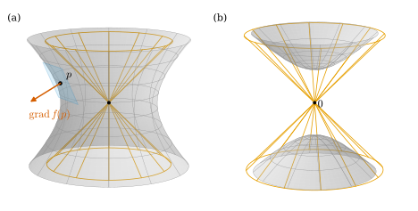
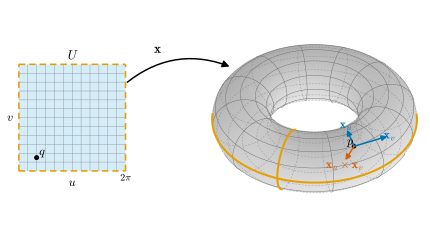
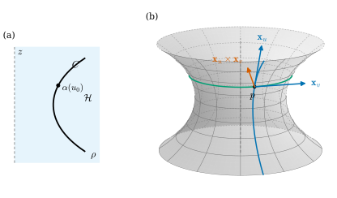

6.5 Preimages of Regular Values
Goals
- critical point와 regular value를 정의하고, regular value의 preimage가 regular surface임을 implicit function theorem으로 증명할 수 있다.
- regular value의 preimage의 tangent plane이 gradient에 수직인 평면임을 보이고 affine tangent plane의 방정식을 구할 수 있다.
- cylinder와 torus of revolution이 regular surface이고 그 standard parametrization이 parametrization임을 보일 수 있다.
- surface of revolution을 정의하고, generating curve가 regular curve이면 surface of revolution이 regular surface임을 증명할 수 있다.
Prerequisites
- Theorem 2.4.4 (implicit function theorem), Definition 2.4.7 (gradient), Corollary 2.4.8 (a level set is locally a graph), Proposition 2.4.10
- Proposition 6.1.4 (a graph is a regular surface), Lemma 6.1.6 (angle function), Proposition 6.2.4, Corollary 6.4.13
- Definition 3.3.8 (topological embedding), Example 3.3.17 (torus and torus of revolution), Example 3.6.13, Corollary 3.7.6 (intermediate value theorem)
- Definition 4.2.1 (regular curve)
Motivation
Section 6.4에서는 surface 사이 map의 differential과 inverse function theorem을 다루고, 이미 regular surface임을 아는 집합에서는 parametrization의 조건 (2)가 저절로 성립함을 보였다(Corollary 6.4.13). 그런데 처음에 “regular surface임을 아는” 일부터가 번거로웠다. Section 6.1에서는 sphere를 여섯 개의 hemisphere 그래프로 덮어야 했다. 게다가 우리가 아는 surface는 대부분 방정식으로 주어진다. sphere \(x^2 + y^2 + z^2 = r^2\), cylinder \(x^2 + y^2 = r^2\), ellipsoid, torus of revolution이 그렇다. 방정식 \(f(x, y, z) = a\)의 해집합은 언제 regular surface인가?
Corollary 2.4.8이 답을 거의 다 준다. gradient가 \(0\)이 아닌 점 근처에서 level set은 한 좌표를 나머지 두 좌표의 smooth function으로 쓴 그래프이고, 그래프는 regular surface이다(Proposition 6.1.4). 그러므로 level set의 모든 점에서 gradient가 \(0\)이 아니면 된다. 그렇지 않은 점에서는 cone의 vertex 같은 일이 생길 수 있다(Figure 6.5.1).

Critical Points and Regular Values
Definition 6.5.1 (critical point and regular value). \(O \subseteq \R^3\)이 open set이고 \(f\colon O \to \R\)가 매끄럽다고 하자. \(Df(p) = 0\), 곧 \(\grad f(p) = 0\)인 점 \(p \in O\)를 \(f\)의 critical point(임계점)이라 하고, 그 값 \(f(p)\)를 critical value(임계값)이라 한다.
critical value가 아닌 실수 \(a\)를 \(f\)의 regular value(정칙값)이라 한다. 즉 \(a\)가 regular value라는 것은 \(f^{-1}(a)\)의 모든 점에서 \(\grad f \neq 0\)이라는 뜻이다. 특히 \(f(O)\)에 들어 있지 않은 값은 (확인할 점이 없으므로) regular value이다.
\(Df(p)\colon \R^3 \to \R\)는 \(1 \times 3\) 행렬 \((\partial_x f\ \ \partial_y f\ \ \partial_z f)\)이므로 “\(Df(p)\)가 surjective”와 “\(Df(p) \neq 0\)”과 “\(\grad f(p) \neq 0\)”은 같은 말이다((2.4.3)). 그래서 regular value는 Corollary 2.4.8의 가정 “\(f^{-1}(a)\)의 모든 점에서 \(Df\)가 surjective”를 만족하는 값이다. 1변수라면 critical point는 \(f'(x) = 0\)인 점, 곧 그래프의 접선이 수평인 점이다.
Example 6.5.2. (a) \(f = x^2 + y^2 + z^2\): \(\grad f = 2(x, y, z)\)이므로 critical point는 원점뿐이고 critical value는 \(0\)이다. \(0\)이 아닌 모든 실수는 regular value이다(\(a \lt 0\)이면 \(f^{-1}(a) = \varnothing\)).
(b) \(f = x^2 + y^2 - z^2\): \(\grad f = (2x, 2y, -2z)\)이므로 critical point는 원점뿐이고 critical value는 \(0\)이다.
(c) \(f = x^2 + y^2\): \(\grad f = (2x, 2y, 0)\)이므로 critical point는 \(z\)축 전체이고 critical value는 \(0\)뿐이다.
(d) \(f = z^2\): \(\grad f = (0, 0, 2z)\)이므로 critical point는 평면 \(z = 0\) 전체이고 critical value는 \(0\)이다.
Theorem 6.5.3 (the preimage of a regular value is a regular surface). \(O \subseteq \R^3\)이 open set이고 \(f\colon O \to \R\)가 매끄러우며 \(a\)가 \(f\)의 regular value이고 \(f^{-1}(a) \neq \varnothing\)이면, \(S = f^{-1}(a)\)는 regular surface이다.
이 정리가 말하는 것. 방정식 하나로 주어진 집합은, 그 위에서 gradient가 한 번도 \(0\)이 되지 않으면 smooth surface이다. 확인할 것은 계산 한 번이다.
Proof idea: 각 점에서 implicit function theorem으로 한 좌표를 풀면 \(S\)가 근처에서 그래프가 되고, 그래프 map이 parametrization이다. 그래프가 “\(S\)와 open set의 교집합”과 정확히 같다는 것이 implicit function theorem의 유일성 부분이다.
Proof. \(p \in S\)라 하자. \(\grad f(p) \neq 0\)이므로 \(\partial_j f(p) \neq 0\)인 \(j\)가 있다. 좌표의 이름을 바꾸어 \(j = 3\), 곧 \(\partial_z f(p) \neq 0\)이라 하자(다른 경우는 Proposition 6.1.4의 다른 두 꼴을 쓴다). \(p = (a_1, a_2, b)\)로 쓰고 Theorem 2.4.4를 \(n = 2\), \(k = 1\), 함수 \(f\), 값 \(c = a\)에 쓰면(정리의 가정은 \(1 \times 1\) 행렬 \(\partial_z f(p)\)가 invertible, 곧 \(0\)이 아니라는 것이다), \((a_1, a_2)\)를 포함하는 open set \(D \subseteq \R^2\), \(b\)를 포함하는 open set \(J \subseteq \R\), smooth \(g\colon D \to J\)가 있어서 \(D \times J \subseteq O\)이고
이다((2.4.1)). \(V = D \times J\)는 \(p\)를 포함하는 \(\R^3\)의 open set이고, \(\mathbf{x}(u, v) = (u, v, g(u, v))\)는 Proposition 6.1.4에 의해 조건 (1), (3)을 만족하며 그래프 \(\{(u, v, g(u, v))\}\) 위로의 homeomorphism이다. (6.5.1)에 의해 그 그래프가 바로 \(V \cap S\)이므로 \(\mathbf{x}\colon D \to V \cap S\)는 \(p\) 근처의 parametrization이다. \(p\)는 임의였으므로 \(S\)는 regular surface이다.
Proposition 6.5.4 (the tangent plane is perpendicular to the gradient). Theorem 6.5.3의 상황에서 모든 \(p \in S\)에 대하여
이다. 따라서 affine tangent plane \(p + T_pS\)의 방정식은 \(\inner{\grad f(p)}{X - p} = 0\), 곧 \(f_x(p)(x - x_0) + f_y(p)(y - y_0) + f_z(p)(z - z_0) = 0\)이다(\(p = (x_0, y_0, z_0)\)).
Proof. \(S\) 위의 곡선 \(\alpha\)가 \(\alpha(0) = p\)이면 \(f(\alpha(t)) = a\)이므로 Proposition 2.4.10(a)에 의해 \(Df(p)\alpha'(0) = 0\)이다. 따라서 \(T_pS \subseteq \ker Df(p)\)이다. \(Df(p) \neq 0\)이므로 rank가 \(1\)이고 Theorem 1.2.8에 의해 \(\dim\ker Df(p) = 2\)이다. \(\dim T_pS = 2\)(Proposition 6.2.4)이므로 둘은 같다. 둘째 등식은 (2.4.3)이다.
Example 6.5.5 (sphere, ellipsoid, hyperboloid). (a) sphere. Example 6.5.2(a)에서 \(r^2 \gt 0\)은 \(f = x^2 + y^2 + z^2\)의 regular value이므로 \(S^2(r) = f^{-1}(r^2)\)는 regular surface이다. 이것이 세 번째 증명이다(Example 6.1.5, Example 6.1.7). \(\grad f(p) = 2p\)이므로 (6.5.2)는 \(T_pS^2(r) = p^\perp\)이고, Example 6.2.8과 같다.
(b) ellipsoid \(\dfrac{x^2}{a^2} + \dfrac{y^2}{b^2} + \dfrac{z^2}{c^2} = 1\) (\(a, b, c \gt 0\)). \(f\)를 좌변이라 하면 \(\grad f = (2x/a^2,\ 2y/b^2,\ 2z/c^2)\)는 원점에서만 \(0\)이고 원점은 \(f^{-1}(1)\)에 없으므로 \(1\)은 regular value이다 [dC §2-2 Example 2]. Example 6.4.6에서는 같은 surface를 sphere의 linear image로 얻었다.
(c) hyperboloid. Example 6.5.2(b)의 \(f = x^2 + y^2 - z^2\)에서 \(1\)과 \(-1\)은 regular value이다. 따라서 한 겹 hyperboloid \(f^{-1}(1)\)과 두 겹 hyperboloid \(f^{-1}(-1)\)은 regular surface이다(Figure 6.5.1). 두 겹 hyperboloid 위에서는 \(z^2 = 1 + x^2 + y^2 \ge 1\)이므로 \(z\)가 \(0\)이 되지 않는다. 만약 이것이 connected라면, 연속함수 \(z\)는 \(z \ge 1\)인 점과 \(z \le -1\)인 점 사이에서 intermediate value theorem(Corollary 3.7.6)에 의해 \(0\)을 지나야 한다. 따라서 두 겹 hyperboloid는 connected가 아니다 [dC §2-2 Example 3]. regular surface의 정의는 connectedness를 요구하지 않는다.
Verification: verify/v-6-5-regular-values.py
Non-example 6.5.6 (preimage of a critical value). (a) \(0\)은 \(f = x^2 + y^2 - z^2\)의 critical value이고, \(f^{-1}(0)\)은 두 겹 cone이며 regular surface가 아니다(Exercise 6.1.4). 그러나 vertex를 뺀 cone은 regular surface이다. \(f\)를 open set \(O = \R^3 \setminus \{0\}\)으로 제한하면 critical point가 없어지므로 \(0\)은 regular value가 되고, \(f|_O^{-1}(0) = f^{-1}(0) \setminus \{0\}\)이다. Theorem 6.5.3에서 정의역 \(O\)를 자유롭게 고를 수 있다는 것이 여기서 쓸모가 있다.
(b) \(0\)은 \(f = z^2\)의 critical value이지만 \(f^{-1}(0)\)은 평면 \(z = 0\), 곧 regular surface이다 [dC §2-2 Exercise 4]. \(f = z\)를 쓰면 같은 집합을 regular value의 preimage로 나타낼 수 있다.
The Cylinder and the Torus of Revolution
이제 running example 둘을 regular surface로 만든다. 방정식으로 regular surface임을 보이고, standard parametrization이 parametrization이라는 것은 Corollary 6.4.13으로 확인한다. inverse map의 식을 찾을 필요가 없다.
Example 6.5.7 (cylinder). 반지름 \(r \gt 0\)인 cylinder \(C_r = \{(x, y, z) : x^2 + y^2 = r^2\}\)은 \(f = x^2 + y^2\)의 preimage \(f^{-1}(r^2)\)이다. Example 6.5.2(c)에서 critical point는 \(z\)축이고 그 위에서 \(f = 0 \neq r^2\)이므로 \(r^2\)은 regular value이다. 따라서 \(C_r\)은 regular surface이고 \(T_pC_r = \{w : xw^1 + yw^2 = 0\} = \Span\{(-y, x, 0),\ (0, 0, 1)\}\)이다(\(p = (x, y, z)\)). 수직 방향 \(e_3\)은 언제나 tangent vector이다. [dC §2-2 Exercise 1, modified]
standard parametrization. \(\mathbf{x}(u, v) = (r\cos u,\ r\sin u,\ v)\), \(U = (0, 2\pi) \times \R\)이라 하자. 값은 \(C_r\)에 있고 매끄럽다. \(\mathbf{x}(u, v) = \mathbf{x}(u', v')\)이면 \(v = v'\)이고 \((\cos u, \sin u) = (\cos u', \sin u')\)이므로 Lemma 6.1.6에 의해 \(u = u'\)이다. 곧 \(\mathbf{x}\)는 injective이다. 또
\[ \mathbf{x}_u = (-r\sin u,\ r\cos u,\ 0), \qquad \mathbf{x}_v = (0, 0, 1), \qquad \mathbf{x}_u \times \mathbf{x}_v = (r\cos u,\ r\sin u,\ 0) \neq 0 \]
이다. Corollary 6.4.13에 의해 \(\mathbf{x}\)는 \(C_r\)의 parametrization이고, image는 직선 \(\{(r, 0, v)\}\)을 뺀 부분이다. \(u \in (-\pi, \pi)\)로 바꾼 parametrization이 그 직선을 덮는다. \(\mathbf{x}_u \times \mathbf{x}_v\)는 cylinder의 바깥쪽을 향한다.
Verification: verify/v-6-5-regular-values.py
Example 6.5.8 (torus of revolution). \(0 \lt r \lt R\)이라 하자. \(z\)축 밖의 점 전체인 open set \(O = \{(x, y, z) : (x, y) \neq (0, 0)\}\)에서 \(\rho = \sqrt{x^2 + y^2}\)은 매끄럽고(양수의 제곱근),
이다(\(\partial_x\rho = x/\rho\)). \(\grad f = 0\)이면 \(z = 0\)이고 \((\rho - R)(x, y) = 0\)인데 \((x, y) \neq 0\)이므로 \(\rho = R\)이다. 그런 점(관의 중심원)에서 \(f = 0 \neq r^2\)이므로 \(r^2\)은 regular value이다. 따라서 torus of revolution \(T_{R,r} = f^{-1}(r^2)\)은 regular surface이다 [dC §2-2 Example 4]. \(T_{R,r}\)의 점은 \(\rho \ge R - r \gt 0\)이므로 \(T_{R,r} \subseteq O\)이다.
standard parametrization. \(\mathbf{x}(u, v) = \big((R + r\cos u)\cos v,\ (R + r\cos u)\sin v,\ r\sin u\big)\)이라 하자. 이 점에서 \(\rho = R + r\cos u\)(\(\gt 0\))이므로 \(f(\mathbf{x}(u, v)) = r^2\cos^2 u + r^2\sin^2 u = r^2\)이다. 거꾸로 \(T_{R,r}\)의 점 \(p\)는 \(((\rho - R)/r,\ z/r) \in S^1\)이므로 \((\cos u, \sin u)\) 꼴이고 \((x/\rho, y/\rho) = (\cos v, \sin v)\)이어서 \(p = \mathbf{x}(u, v)\)이다. 곧 \(T_{R,r} = \mathbf{x}(\R^2)\)이고, 이것은 Example 3.3.17의 집합과 같다. partial derivative는
\[ \begin{aligned} \mathbf{x}_u &= (-r\sin u\cos v,\ -r\sin u\sin v,\ r\cos u),\\ \mathbf{x}_v &= \big(-(R + r\cos u)\sin v,\ (R + r\cos u)\cos v,\ 0\big) \end{aligned} \]
이다. \(\rho = R + r\cos u\)로 쓰고 cross product를 성분마다 계산하면
\[ \begin{aligned} (\mathbf{x}_u \times \mathbf{x}_v)^1 &= (-r\sin u\sin v)(0) - (r\cos u)(\rho\cos v) = -r\rho\cos u\cos v,\\ (\mathbf{x}_u \times \mathbf{x}_v)^2 &= (r\cos u)(-\rho\sin v) - (-r\sin u\cos v)(0) = -r\rho\cos u\sin v,\\ (\mathbf{x}_u \times \mathbf{x}_v)^3 &= (-r\sin u\cos v)(\rho\cos v) - (-r\sin u\sin v)(-\rho\sin v)\\ &= -r\rho\sin u \end{aligned} \]
이므로
이다. \((\cos u\cos v, \cos u\sin v, \sin u)\)는 관의 중심원 위의 점 \((R\cos v, R\sin v, 0)\)에서 \(p\)로 가는 단위벡터이므로, \(\mathbf{x}_u \times \mathbf{x}_v\)는 안쪽(관의 중심원 쪽)을 향한다(Figure 6.5.2). Equation (6.5.3)에서 \(p = \mathbf{x}(u, v)\)의 gradient는 \(\grad f(p) = 2r(\cos u\cos v, \cos u\sin v, \sin u)\)로 바깥쪽을 향하고, 둘은 서로 반대 방향으로 평행하다. (6.5.2)와 Corollary 6.2.5(b)가 맞는다.
parametrization임. \(a, b \in \R\)에 대해 \(\mathbf{x}\)를 \(U_{a,b} = (a, a + 2\pi) \times (b, b + 2\pi)\)로 제한하자. 위와 같이 \(\mathbf{x}(u, v) = \mathbf{x}(u', v')\)이면 \((\cos u, \sin u) = (\cos u', \sin u')\), \((\cos v, \sin v) = (\cos v', \sin v')\)이므로 Lemma 6.1.6(\(t_0 = a\), \(t_0 = b\))에 의해 \(\mathbf{x}|_{U_{a,b}}\)는 injective이다. total derivative는 (6.5.4)에 의해 injective이므로 Corollary 6.4.13에 의해 \(\mathbf{x}|_{U_{a,b}}\)는 \(T_{R,r}\)의 parametrization이다. 이 parametrization이 빠뜨리는 점은 \(u \equiv a\)이거나 \(v \equiv b\) (\(\bmod 2\pi\))인 점, 곧 원 두 개다. \((a, b) = (0, 0), (\pi, \pi), (\pi/2, \pi/2)\)의 세 parametrization은 \(T_{R,r}\)를 덮는다. 한 점 \(\mathbf{x}(u, v)\)가 셋 모두에서 빠지려면 세 조건 “\(u \equiv a_k\) 또는 \(v \equiv a_k\)”(\(a_k = 0, \pi, \pi/2\))가 모두 성립해야 하는데, \(u\)는 세 값 가운데 많아야 하나, \(v\)도 많아야 하나와 합동이므로 셋을 모두 만족할 수 없다.
Verification: verify/v-6-5-regular-values.py

Surfaces of Revolution
cylinder, torus of revolution, (극을 뺀) sphere는 모두 plane curve를 \(z\)축 둘레로 돌린 surface이다. 이런 surface는 방정식 없이도 generating curve의 parametrization에서 곧바로 parametrization을 얻는다. \(xz\) 평면의 오른쪽 반을 \(\mathcal{H} = \{(\rho, z) : \rho \gt 0\}\)로 쓰고, \(Q\colon \R^3 \setminus \{z\text{축}\} \to \mathcal{H}\), \(Q(x, y, z) = (\sqrt{x^2 + y^2},\ z)\)라 하자. \(Q\)는 연속이다.
Definition 6.5.9 (surface of revolution). \(C \subseteq \mathcal{H}\)에 대하여 \(S_C = Q^{-1}(C) = \{(\rho\cos v,\ \rho\sin v,\ z) : (\rho, z) \in C,\ v \in \R\}\)을 \(C\)를 \(z\)축 둘레로 돌려 얻은 surface of revolution(회전면)이라 한다.
Proposition 6.5.10 (parametrization of a surface of revolution). \(C \subseteq \mathcal{H}\)라 하고, \(I\)가 열린구간이며 \(\alpha = (\rho, z)\colon I \to \mathcal{H}\)가 regular curve(Definition 4.2.1)로서 \(\alpha(I)\) 위로의 topological embedding(Definition 3.3.8)이고, \(\alpha(I)\)가 \(C\)에서 열려 있다고 하자. 그러면 모든 \(v_0 \in \R\)에 대하여
는 \(S_C\)의 parametrization이다. 따라서 \(C\)가 이런 곡선들의 image로 덮이면 \(S_C\)는 regular surface이다.
Proof idea: 조건 (3)은 cross product 계산 한 번이다. 조건 (2)의 inverse map은 “\(Q(p)\)를 \(\alpha^{-1}\)으로 되돌리고, 각도는 Lemma 6.1.6으로 되찾는” 두 continuous map의 쌍이다.
Proof. (1) \(\rho, z\)가 매끄러우므로 \(\mathbf{x}\)는 매끄럽다.
(3) \(\mathbf{x}_u = (\rho'\cos v,\ \rho'\sin v,\ z')\), \(\mathbf{x}_v = (-\rho\sin v,\ \rho\cos v,\ 0)\)이다. 성분마다 계산하면 \((\mathbf{x}_u \times \mathbf{x}_v)^1 = \rho'\sin v \cdot 0 - z'\rho\cos v\), \((\mathbf{x}_u \times \mathbf{x}_v)^2 = z'(-\rho\sin v) - \rho'\cos v \cdot 0\), \((\mathbf{x}_u \times \mathbf{x}_v)^3 = \rho'\cos v \cdot \rho\cos v - \rho'\sin v\,(-\rho\sin v) = \rho\rho'\)이므로
이다. \(\rho \gt 0\)이고 \(\alpha\)가 regular이므로 \(0\)이 아니다.
(2) \(\alpha(I)\)가 \(C\)에서 열려 있으므로 \(\mathcal{H}\)의 open set \(W\)가 있어 \(W \cap C = \alpha(I)\)이다. \(\Lambda = \{(s\cos v_0,\ s\sin v_0,\ z) : s \ge 0,\ z \in \R\}\)(각 \(v_0\) 방향의 closed half-plane)로 두고 \(V = Q^{-1}(W) \setminus \Lambda\)라 하자. \(Q^{-1}(W)\)는 open set \(\R^3 \setminus \{z\text{축}\}\)의 open set이고 \(\Lambda\)는 닫혀 있으므로 \(V\)는 \(\R^3\)의 open set이다. \(\mathbf{x}(U) = V \cap S_C\)임을 보이자. \(\mathbf{x}(u, v)\)는 \(Q(\mathbf{x}(u, v)) = \alpha(u) \in W \cap C\)이고, \(\rho(u) \gt 0\)이며 \(v \not\equiv v_0\)이므로 \(\Lambda\)에 없다. 거꾸로 \(p = (x, y, z) \in V \cap S_C\)이면 \(Q(p) \in W \cap C = \alpha(I)\)이므로 \(Q(p) = \alpha(u)\)인 \(u \in I\)가 하나 있고, \(p \notin \Lambda\)이므로 \((x/\rho(u),\ y/\rho(u)) \in S^1 \setminus \{(\cos v_0, \sin v_0)\}\)이다. Lemma 6.1.6에 의해 이 점은 \((\cos v, \sin v)\), \(v \in (v_0, v_0 + 2\pi)\)로 한 가지 방법으로만 쓰이고, \(p = \mathbf{x}(u, v)\)이다. 따라서 \(\mathbf{x}\)는 \(V \cap S_C\) 위로의 bijective이고 inverse map은
\[ \mathbf{x}^{-1}(p) = \Big(\alpha^{-1}(Q(p)),\ \ \big(e|_{(v_0, v_0 + 2\pi)}\big)^{-1}\Big(\frac{x}{\sqrt{x^2 + y^2}}, \frac{y}{\sqrt{x^2 + y^2}}\Big)\Big) \]
이다. \(\alpha^{-1}\colon \alpha(I) \to I\)는 \(\alpha\)가 topological embedding이므로 연속이고, \(Q\)와 각도 함수도 연속이므로 \(\mathbf{x}^{-1}\)은 연속이다.
coordinate curve를 보자. \(v\)를 고정한 곡선 \(u \mapsto \mathbf{x}(u, v)\)는 generating curve \(C\)를 각 \(v\)만큼 돌려 놓은 것이고, \(u\)를 고정한 곡선은 반지름 \(\rho(u)\)인 수평한 원이다. sphere에서는 각각 meridian과 circle of latitude이다(Example 4.1.13). \(\inner{\mathbf{x}_u}{\mathbf{x}_v} = -\rho\rho'\cos v\sin v + \rho\rho'\sin v\cos v = 0\)이므로 두 coordinate curve는 언제나 서로 수직이다(Figure 6.5.3). 이 사실은 Chapter 7에서 surface of revolution의 \(F = 0\)으로 다시 나온다.
Example 6.5.11 (examples of surfaces of revolution). (a) sphere(두 극을 뺀 것). \(\alpha(\theta) = (r\sin\theta,\ r\cos\theta)\), \(\theta \in (0, \pi)\)은 반원 위로의 topological embedding인 regular curve이다(inverse map \((\rho, z) \mapsto \arccos(z/r)\)). (6.5.5)는 sphere의 standard parametrization \(\mathbf{x}(\theta, \varphi)\) 자체이고, (6.5.6)은 \(\abs{\mathbf{x}_\theta \times \mathbf{x}_\varphi} = r\sin\theta \cdot r\)으로 (6.1.5)와 같다. 두 극은 \(z\)축 위에 있어 surface of revolution에 들지 않는다.
(b) cylinder. \(\alpha(u) = (r, u)\), \(u \in \R\). surface of revolution의 식은 \((r\cos v, r\sin v, u)\)이고, Example 6.5.7의 standard parametrization과는 두 변수의 이름이 바뀌어 있다(standard parametrization은 각을 \(u\)로 쓴다).
(c) torus of revolution. \(\alpha(u) = (R + r\cos u,\ r\sin u)\)는 원 \(C = \{(\rho - R)^2 + z^2 = r^2\} \subseteq \mathcal{H}\)를 그린다. \(u \in (a, a + 2\pi)\)로 제한하면 \(C\)에서 한 점을 뺀 열린 부분 위로의 topological embedding이다(Lemma 6.1.6). \(a = 0\)과 \(a = \pi\)의 두 곡선이 \(C\)를 덮으므로 Proposition 6.5.10에서 torus of revolution이 regular surface라는 두 번째 증명을 얻는다. (6.5.5)는 torus of revolution의 standard parametrization이고 \(\abs{\mathbf{x}_u \times \mathbf{x}_v} = (R + r\cos u)\,r\)은 (6.5.4)와 같다.
(d) catenoid. \(\alpha(u) = (\cosh u,\ u)\), \(u \in \R\)은 그래프 \(\rho = \cosh z\)의 parametrization이므로 topological embedding인 regular curve이다. 그 surface of revolution \(\{x^2 + y^2 = \cosh^2 z\}\)를 catenoid이라 부른다(Figure 6.5.3). (6.5.6)에서 \(\abs{\mathbf{x}_u \times \mathbf{x}_v} = \cosh u\sqrt{\sinh^2 u + 1} = \cosh^2 u\)이다.
Verification: verify/v-6-5-regular-values.py

Summary
- smooth \(f\colon O \subseteq \R^3 \to \R\)에서 \(\grad f(p) = 0\)인 점이 critical point이고, critical value가 아닌 값이 regular value이다.
- regular value의 공집합이 아닌 preimage는 regular surface이다(Theorem 6.5.3). 그 tangent plane은 \(\ker Df(p) = \grad f(p)^\perp\)이다(Proposition 6.5.4). 정리는 충분조건일 뿐이다(\(z^2 = 0\)).
- sphere, ellipsoid, hyperboloid, cylinder, torus of revolution은 regular value의 preimage이다. 두 겹 hyperboloid처럼 connected가 아닐 수도 있다.
- cylinder와 torus of revolution의 standard parametrization은 parametrization이다(Corollary 6.4.13). torus of revolution의 \(\mathbf{x}_u \times \mathbf{x}_v\)는 안쪽을 향하고 크기는 \(r(R + r\cos u)\)이다.
- plane curve \(\alpha = (\rho, z)\)(\(\rho \gt 0\), regular, topological embedding)를 돌린 surface of revolution은 regular surface이고, \(\mathbf{x}_u \perp \mathbf{x}_v\), \(\abs{\mathbf{x}_u \times \mathbf{x}_v} = \rho\abs{\alpha'}\)이다(Proposition 6.5.10).
다음 장에서는 이 장에서 만든 무대 위에서 길이, 각, 넓이를 잰다. tangent plane \(T_pS\)에 \(\R^3\)의 inner product를 제한한 first fundamental form이 출발점이고, running example의 \(E, F, G\)를 계산한다(Chapter 7).
Exercises
Exercise 6.5.1 ★ \(f(x, y, z) = (x^2 + y^2 + z^2 - 1)^2\)의 critical point와 critical value를 구하고, 어떤 \(c\)에 대해 \(f^{-1}(c)\)가 regular surface인지 판정하여라. [dC §2-2 Exercise 7, modified]
Hint
\(c = 1\)이면 \(f^{-1}(c)\)에 고립된 점이 하나 있다. 그 점을 지나는 parametrization \(\mathbf{x}\)가 있다면 조건 (2)에서 한 점의 \(\mathbf{x}\)에 의한 preimage가 \(\R^2\)의 open set이어야 한다.
Solution
\(\grad f = 4(x^2 + y^2 + z^2 - 1)(x, y, z)\)이므로 critical point는 unit sphere \(S^2(1)\) 전체와 원점이고, critical value는 \(0\)(sphere 위)과 \(1 = f(0)\)이다. \(f = c\)는 \(c \lt 0\)이면 공집합이고, \(c \ge 0\)이면 \(\abs{p}^2 = 1 \pm \sqrt c\)와 같다.
- \(c = 0\): critical value이지만 \(f^{-1}(0) = S^2(1)\)은 regular surface이다(Non-example 6.5.6(b)와 같은 현상).
- \(0 \lt c \lt 1\): regular value이고 \(f^{-1}(c)\)는 반지름 \(\sqrt{1 - \sqrt c}\), \(\sqrt{1 + \sqrt c}\)인 두 sphere의 합집합으로 regular surface이다(Theorem 6.5.3).
- \(c \gt 1\): \(1 - \sqrt c \lt 0\)이므로 \(f^{-1}(c)\)는 반지름 \(\sqrt{1 + \sqrt c}\)인 sphere 하나이고, regular value이므로 regular surface이다.
- \(c = 1\): \(f^{-1}(1) = \{0\} \cup S^2(\sqrt2)\)는 regular surface가 아니다. regular surface라면 원점 근처의 parametrization \(\mathbf{x}\colon U \to V \cap f^{-1}(1)\)과 \(\mathbf{x}(q) = 0\)인 \(q\)가 있다. \(B_1(0)\)은 \(S^2(\sqrt2)\)와 만나지 않으므로 \(\mathbf{x}^{-1}(B_1(0)) = \{q\}\)이다(\(\mathbf{x}\)는 injective). \(\mathbf{x}\)가 연속이므로 이것은 \(U\)의 open set인데, 한 점은 \(\R^2\)에서 열려 있지 않다. 모순이다.
따라서 \(f^{-1}(c)\)가 regular surface일 필요충분조건은 \(c \ge 0\)이고 \(c \neq 1\)인 것이다. critical value \(0\)과 \(1\)에서 결과가 갈린다는 것이 Theorem 6.5.3이 충분조건일 뿐임을 보여 준다.
Verification: verify/v-6-5-regular-values.py
Exercise 6.5.2 ★ 한 겹 hyperboloid \(S = \{x^2 + y^2 - z^2 = 1\}\)의 점 \(p = (x_0, y_0, z_0)\)에서 affine tangent plane의 방정식이 \(x_0x + y_0y - z_0z = 1\)임을 보여라. 또 이 평면이 \(z\)축과 평행할 필요충분조건은 \(z_0 = 0\)임을 보여라. [dC §2-4 Exercise 2, modified]
Solution
\(f = x^2 + y^2 - z^2\)에 대해 \(1\)은 regular value이고(Example 6.5.5(c)) \(\grad f(p) = (2x_0, 2y_0, -2z_0)\)이다. Proposition 6.5.4에서 affine tangent plane은 \(2x_0(x - x_0) + 2y_0(y - y_0) - 2z_0(z - z_0) = 0\), 곧 \(x_0x + y_0y - z_0z = x_0^2 + y_0^2 - z_0^2 = 1\)이다.
평면이 \(z\)축과 평행하다는 것은 \(e_3 \in T_pS\)라는 뜻이고, (6.5.2)에 의해 이것은 \(\inner{\grad f(p)}{e_3} = -2z_0 = 0\), 곧 \(z_0 = 0\)과 같다. (\(z_0 = 0\)인 점은 hyperboloid의 가장 좁은 원 \(x^2 + y^2 = 1\)이고, 거기서 tangent plane은 수직 평면 \(x_0x + y_0y = 1\)이다.)
Verification: verify/v-6-5-regular-values.py
Exercise 6.5.3 ★ 참인지 거짓인지 판별하고 이유를 대어라. (a) \(a\)가 \(f\)의 critical value이면 \(f^{-1}(a)\)는 regular surface가 아니다. (b) regular value의 preimage인 regular surface는 connected이다. (c) \(S = f^{-1}(a)\)(\(a\)는 regular value)이면 \(\grad f(p) \in T_pS\)이다. (d) 모든 regular surface \(S\)와 \(p \in S\)에 대하여, \(p\)를 포함하는 open set \(O\)와 \(0\)을 regular value로 갖는 smooth \(g\colon O \to \R\)가 있어서 \(S \cap O = g^{-1}(0)\)이다.
Solution
(a) 거짓. \(z^2 = 0\)(Non-example 6.5.6(b)).
(b) 거짓. 두 겹 hyperboloid(Example 6.5.5(c)).
(c) 거짓. \(\grad f(p) \neq 0\)은 \(T_pS\)에 수직이므로 \(\inner{\grad f(p)}{\grad f(p)} \gt 0\)에서 \(T_pS\)에 들 수 없다.
(d) 참. Proposition 6.1.8에 의해 \(p\)를 포함하는 open set \(W\)에서 \(W \cap S\)가 어느 좌표평면 위의 smooth 그래프, 예를 들어 \(\Omega\) 위의 \(z = h(x, y)\)이다. \(O = W \cap (\Omega \times \R)\)와 \(g(x, y, z) = z - h(x, y)\)로 두면 \(\grad g = (-h_x, -h_y, 1) \neq 0\)이고, \(O\)의 점 가운데 \(g = 0\)인 것은 그래프의 점이므로 \(S \cap O = g^{-1}(0)\)이다. (regular surface는 국소적으로 늘 regular value의 preimage이다. Chapter 14의 compatibility proposition에서 이 사실을 다시 쓴다.)
Exercise 6.5.4 ★ 평면 \(P = \{z = 0\}\)에서 cylinder \(C_r\)로 가는 map \(\varphi(x, y, 0) = \big(r\cos(x/r),\ r\sin(x/r),\ y\big)\)가 local diffeomorphism이지만 injective가 아님을 보여라.
Solution
\(\varphi\)는 \(\R^3\)의 smooth map의 restriction이고 값이 \(C_r\)에 있으므로 매끄럽다(Example 6.3.12(a)). 평면의 parametrization \(\iota(u, v) = (u, v, 0)\)과 cylinder의 standard parametrization \(\mathbf{x}\)(Example 6.5.7)로 쓰면, \(0 \lt u/r \lt 2\pi\)인 곳에서 coordinate representation은 \(\hat\varphi(u, v) = (u/r,\ v)\)이고 \(\det D\hat\varphi = 1/r \neq 0\)이다. \(u/r\)이 다른 구간에 있으면 \(u\)를 \(2\pi r\)의 정수배만큼 옮긴 점에서 같은 계산을 하거나 \(u \in (-\pi, \pi)\)인 parametrization을 쓴다. 따라서 모든 점에서 \(d\varphi_p\)가 isomorphism이고 Theorem 6.4.11에 의해 \(\varphi\)는 local diffeomorphism이다. 그러나 \(\varphi(x + 2\pi r, y, 0) = \varphi(x, y, 0)\)이므로 injective가 아니다. (cylinder를 세로선을 따라 잘라 펼치는 Example 4.2.8(b)의 그림이 이 map의 역방향이다. Chapter 7에서 이 map이 길이를 보존함을 본다.)
Verification: verify/v-6-5-regular-values.py
Exercise 6.5.5 ★★ \(g\colon \mathcal{H} \to \R\)가 half-plane \(\mathcal{H} = \{(\rho, z) : \rho \gt 0\}\)에서 매끄럽고 \(0\)이 \(g\)의 regular value이며 \(C = g^{-1}(0) \neq \varnothing\)이라 하자. \(f(x, y, z) = g(\sqrt{x^2 + y^2},\ z)\)로 두면 \(0\)은 \(f\colon \R^3 \setminus \{z\text{축}\} \to \R\)의 regular value이고 \(f^{-1}(0)\)은 surface of revolution \(S_C\)임을 보여라. torus of revolution이 이 경우임을 확인하여라.
Solution
\(\rho = \sqrt{x^2 + y^2}\)은 \(\R^3 \setminus \{z\text{축}\}\)에서 매끄럽고 \(\partial_x\rho = x/\rho\), \(\partial_y\rho = y/\rho\)이므로 chain rule에서 \(\grad f = \big(g_\rho\,x/\rho,\ g_\rho\,y/\rho,\ g_z\big)\)이다(\(g_\rho, g_z\)는 \((\rho, z)\)에서 계산). \((x/\rho)^2 + (y/\rho)^2 = 1\)이므로 \(\abs{\grad f}^2 = g_\rho^2 + g_z^2 = \abs{\grad g}^2\)이다. \(f(p) = 0\)이면 \(Q(p) \in g^{-1}(0)\)이고 거기서 \(\grad g \neq 0\)이므로 \(\grad f(p) \neq 0\)이다. 따라서 \(0\)은 regular value이다. \(f(p) = 0 \iff g(Q(p)) = 0 \iff Q(p) \in C\)이므로 \(f^{-1}(0) = Q^{-1}(C) = S_C\)이다. torus of revolution은 \(g(\rho, z) = (\rho - R)^2 + z^2 - r^2\)인 경우이고(\(\grad g = (2(\rho - R), 2z)\)는 \(C\) 위에서 \(0\)이 아니다), (6.5.3)의 \(f - r^2\)이다.
Verification: verify/v-6-5-regular-values.py
Exercise 6.5.6 ★★ \(a, b, c \neq 0\)일 때 세 방정식 \(x^2 + y^2 + z^2 = ax\), \(x^2 + y^2 + z^2 = by\), \(x^2 + y^2 + z^2 = cz\)가 각각 regular surface인 sphere를 정의함을 보이고 그 중심과 반지름을 구하여라. 또 어느 두 surface도 공통점에서 수직으로 만남(두 tangent plane의 법선이 수직)을 보이고, 이것이 “두 중심 사이 거리의 제곱이 두 반지름의 제곱의 합과 같다”는 사실과 같은 내용임을 설명하여라. [dC §2-4 Exercise 12, modified]
Solution
sphere. \(m_1 = (a/2, 0, 0)\)이라 하면 \(f_1 = x^2 + y^2 + z^2 - ax = \abs{p - m_1}^2 - a^2/4\)이다. 따라서 \(f_1^{-1}(0)\)은 중심 \(m_1\), 반지름 \(r_1 = \abs{a}/2\)인 sphere이다. \(\grad f_1 = 2(p - m_1)\)은 \(p = m_1\)에서만 \(0\)이고 거기서 \(f_1 = -a^2/4 \neq 0\)이므로 \(0\)은 regular value이고, 이 sphere는 regular surface이다(Theorem 6.5.3). 같은 방식으로 둘째와 셋째는 중심 \(m_2 = (0, b/2, 0)\), \(m_3 = (0, 0, c/2)\), 반지름 \(r_2 = \abs{b}/2\), \(r_3 = \abs{c}/2\)인 sphere이다.
수직. \(p\)가 첫째와 둘째 surface의 공통점이면 \(\abs{p}^2 = ax = by\)이므로
\[ \begin{aligned} \inner{\grad f_1}{\grad f_2} &= (2x - a)(2x) + (2y)(2y - b) + 4z^2\\ &= 4\abs{p}^2 - 2ax - 2by = 4\abs{p}^2 - 2\abs{p}^2 - 2\abs{p}^2 = 0 \end{aligned} \]
이다. Proposition 6.5.4에 의해 gradient는 각 tangent plane에 수직이므로 두 surface는 수직으로 만난다. 다른 쌍도 같다.
기하적 뜻. 공통점 \(p\)에서 \(\grad f_i(p) = 2(p - m_i)\)이므로 두 surface가 \(p\)에서 수직으로 만난다는 것은 \(\inner{p - m_1}{p - m_2} = 0\)이다. \(\abs{p - m_1} = r_1\), \(\abs{p - m_2} = r_2\)이므로 \(\abs{m_1 - m_2}^2 = \abs{(p - m_2) - (p - m_1)}^2 = r_1^2 + r_2^2 - 2\inner{p - m_1}{p - m_2}\)이고, 따라서 수직은 \(\abs{m_1 - m_2}^2 = r_1^2 + r_2^2\)과 같다. 실제로 \(\abs{m_1 - m_2}^2 = a^2/4 + b^2/4 = r_1^2 + r_2^2\)이다. 이 조건은 \(p\)에 의존하지 않으므로, 두 sphere는 모든 공통점에서 같은 방식으로 수직으로 만난다.
Verification: verify/v-6-5-regular-values.py
Exercise 6.5.7 ★★ Example 6.5.8의 꼴 \(\mathbf{x}|_{U_{a,b}}\)인 parametrization 두 개로는 torus of revolution을 덮을 수 없음을 보여라. (세 개로는 덮을 수 있음을 본문에서 보였다.)
Solution
두 parametrization을 \(\mathbf{x}|_{U_{a_1, b_1}}\), \(\mathbf{x}|_{U_{a_2, b_2}}\)라 하자. 점 \(p = \mathbf{x}(a_1, b_2)\)를 보자. 첫째 parametrization은 \(u \equiv a_1\)인 점을 빠뜨리고, 둘째는 \(v \equiv b_2\)인 점을 빠뜨린다. \(\mathbf{x}(u, v) = p\)이면 \((\cos u, \sin u) = (\cos a_1, \sin a_1)\), \((\cos v, \sin v) = (\cos b_2, \sin b_2)\)이므로 \(u \equiv a_1\), \(v \equiv b_2\) (\(\bmod 2\pi\))이다. 따라서 \(p\)는 두 parametrization의 image 어디에도 없다.